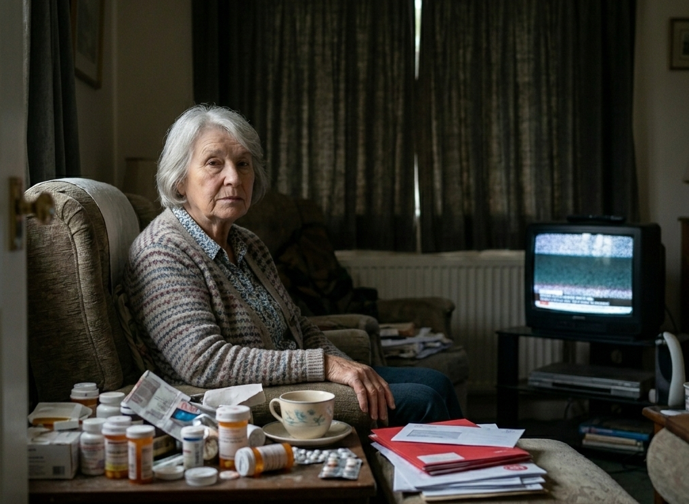

Meet Helen.
Her story matters.
Helen is 75 years old and is receiving palliative care at home. She has a family who love her deeply — and a family who are struggling. Before your first visit, take a moment to hear from Helen herself.
Watch Helen's introduction video below. She will tell you in her own words what matters most to her. Listen carefully — her priorities will shape the choices you make throughout this module.
Add a .vtt captions file to meet WCAG 1.2.2
Helen's Clinical Profile
Review the information below before making your first home visit.

Clinical Alert: Helen has Stage 4 ovarian cancer with recent pulmonary metastases. She experiences episodes of breathlessness requiring oxygen therapy. Her prognosis is weeks to months. Family members are aware but their granddaughter Sophie (14) has not been formally told.
Helen has clearly expressed that her faith is central to her coping — she prays regularly and finds it her main source of peace. She does not want to be seen as a burden. She values her dignity and privacy and has asked that any clinical discussions be carried out sensitively in her presence only.
Simon is showing signs of carer strain — working overtime to cover bills while managing Helen's care. Sophie is exhibiting withdrawal behaviours and has not spoken about her grandmother's illness. Consider referral to youth bereavement services.

You arrive at the family home for a routine visit. Simon is in the kitchen surrounded by
unopened bills. Helen is in her armchair, breathing heavily. Sophie's bedroom door is shut.
Simon looks up, exhausted. "Sorry about the mess. I've just come in from a shift and
haven't checked on everyone yet."
Helen's Living Room
You are now in Helen's home. Before you begin your assessment, take a moment to explore the room. Click each hotspot to identify what you notice — you must find all 3 points of interest before you can continue.
